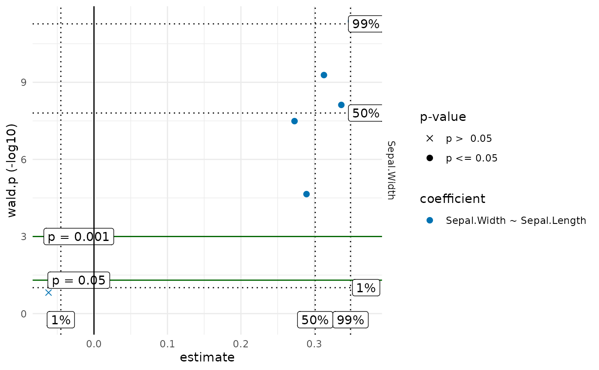
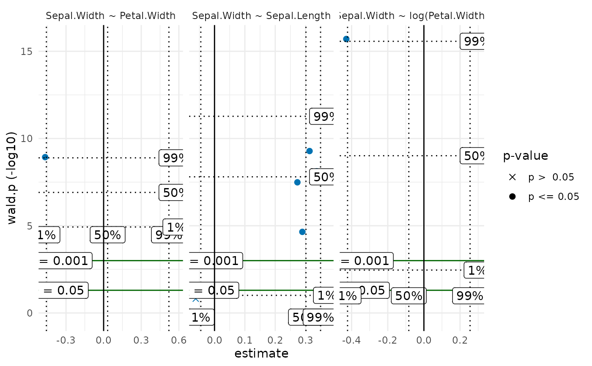

Plots xvar against -log10(p), adding the quantile lines computed by
voe() and p-value cutoffs. With more than one association (response x
coefficient) each one is drawn in its own panel, with its own lines.
Arguments
- x
a
pimaobject, apima.multiobject created withfit.specs, a list of fittedlmorglmmodels, or a table returned byspec_table().- focal, focal.var
coefficients and variables to consider, as in
spec_curve(); by default the tested coefficients (pima), the focal predictors (pima.multi) or all the coefficients except the intercept. Each selected coefficient is a separate association.- xvar
column of the specification table to summarise (e.g.
"pcor","estimate").- p.adjusted
which p-values to use, with the same rules as
spec_curve(): forpimaobjectsTRUEuses the adjusted p-values,FALSEthe unadjusted flipscores ones andNULL(default) the adjusted ones whenpima()applied a correction; for lists of models andpima.multiobjects only the unadjusted Wald p-values exist ("wald.p") andTRUEis an error.- p.cut
p-value cutoffs drawn as horizontal lines.
- q
probabilities for the quantiles; the extremes define the amplitudes and the Janus effect.
- type
"additive"(difference) or"ratio"(exp of the difference, only withxvar = "estimate").- null
value under the null hypothesis on the scale of
xvar(0 forestimate,pcorandz).- alpha
significance level.
- which.response
responses to consider; defaults to all.
- median.traj
if
TRUE, adds the trajectory of the medians by the number of excluded predictors.- p
column of p-values of the specification table (e.g. one added with
stats::p.adjust()). IfNULL, chosen with the rules ofp.adjusted.- ...
further arguments passed to
spec_scatter()(e.g.xlab,ylab,shapes,by).
See also
Other vibration of effects:
janus(),
voe(),
voe_variance()
Other specification tables and plots:
spec_curve(),
spec_scatter(),
spec_table(),
transf_p()
Examples
multi <- create_multi(
Sepal.Width ~ Sepal.Length + Petal.Width + Species,
data = iris,
focal = "Sepal.Length",
nfuns = "log",
fit.specs = list(lm = lm)
)
volcano(multi, xvar = "estimate")

# one panel per association
volcano(multi, focal.var = c("Sepal.Length", "Petal.Width"), xvar = "estimate")
